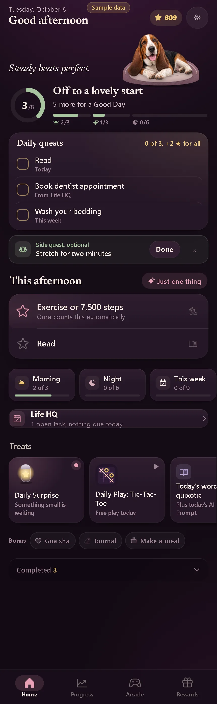

Home · Today (afternoon, Dexter relaxed in his bed)
- Area
- Home
- Screen 1 of 65
- home
- Capture
- full scrolling page (430×1349), demo time 15:00, sample data
- Image
- img/01-home.webp

Text on this screen
Good afternoon Steady beats perfect. 3 /8 Off to a lovely start 5 more for a Good Day 2/3 1/3 0/6 This afternoon Just one thing Exercise or 7,500 steps Oura counts this automatically Read Morning 2 of 3 Night 0 of 6 This week 0 of 9 Daily quests 0 of 3, +2 ★ for all Exercise or 7,500 steps A little stretch Book dentist appointment From Life HQ Wash your bedding This week Side quest, optional Stretch for two minutes Done Treats Daily Surprise Something small is waiting Daily Play: Tic-Tac-Toe Free play today Today’s word: quixotic Plus today’s AI term: Prompt Weekly Bingo 3 of 25 6 Arcade tokens 3 more habits today earns a token Bonus Gua sha Journal Make a meal Completed 3